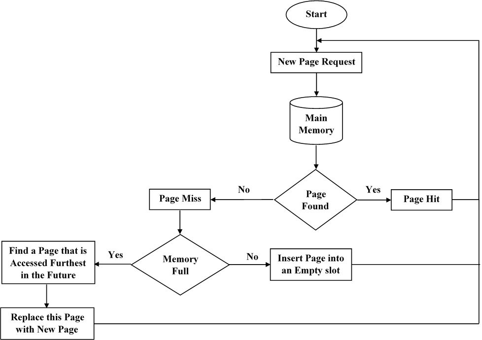
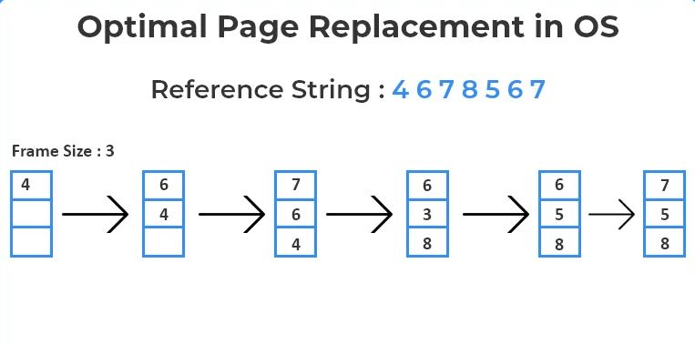

The main idea behind the OPT algorithm is to replace a page that will not be needed for the longest period of time in the future.
It predicts which page will be accessed furthest ahead and replaces it when a page fault occurs.
Thus, the operating system needs information on future memory references to implement it.
However, it is not practical in real-world scenarios.

Flow Chart of OPR

Example of OPR
Advantages & Disadvantages :
In this algorithm, only those pages are replaced that are not be utilized for the longest time frame. It includes future knowledge, because of this capability optimal page replacement algorithm consists following advantages
1. Most reduced page fault rate
2. Never suffers from Belady’s anomaly
3. Twice tantamount to FIFO Page Replacement Algorithm
The optimal page replacement algorithm consists some of disadvantages are as follows
1. It is hard to execute
2. It needs to estimate for example future knowledge